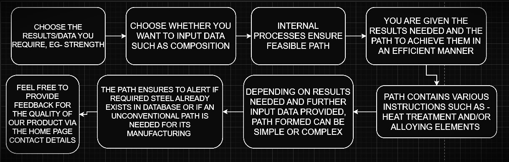

Find Your Steel :-
In summary, when you click on the button below - "SEARCH STEEL FROM CURRENT BASE", you will first choose the results/data that you require such as UTS or Ultimate Tensile Strength. You will then be given the , Alloying Elements needed and so on. You can also instead, choose to further the process by Login In to your profile or Registering and proceeding, by clicking the "LOGIN FOR ADVANCED OPTIONS" Button. This will then guide you to Data Analytics, Steel Prediction and Creation, and other user specific advanced functions and features.
After the process has completed running, you will be provided with a step by step rigorous analysis of the type of Steel that you require containing fields but not limited to - Composition Changes needed, Heat Treatment needed, Graphs and so on. Please Remember to Provide Feedback about your satisfaction with the results via the Contact Information provided in the Home Page.